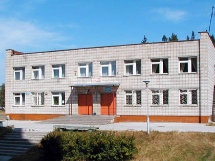

Школа 62  Google Maps
Google Maps

В результате реорганизации Муниципального казенного вечернего сменного общеобразовательного учреждения «Вечерняя (сменная) общеобразовательная школа № 62» и муниципального бюджетного образовательного учреждения «Межшкольный учебный комбинат» путем их слияния было создано 3 сентября 2012 года Муниципальное бюджетное вечернее (сменное) общеобразовательное учреждение «Вечерняя (сменная) общеобразовательная школа № 62».
Учредителем и собственником имущества является городской округ «Город Лесной» Свердловской области.
Адрес места нахождения: 624200, г. Лесной, Свердловская область, ул. Карла Маркса, д. 15.
Филиалов и структурных подразделений в МБВСОУ ВСОШ № 62 нет.